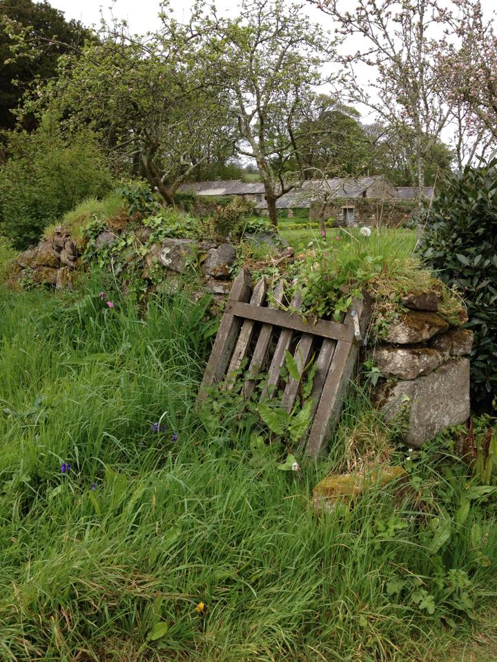

… 22 May 2014
Beginnings
It's just 2 weeks until I start out at Godolphin as a Full-Time Volunteer Gardener and to say that I'm excited is an understatement! I've visited multiple times since I was lucky enough to be offered the position and cannot wait to start this new journey.
I will be at Godolphin for a year and during that time will receive practical training whilst working towards the Level 2 Diploma in Work-Based Horticulture. I've made a shortlist of the modules I'm hoping to complete and have started working through my fabulous new purchase... "The Fundamentals of Horticulture" edited by Chris Bird.